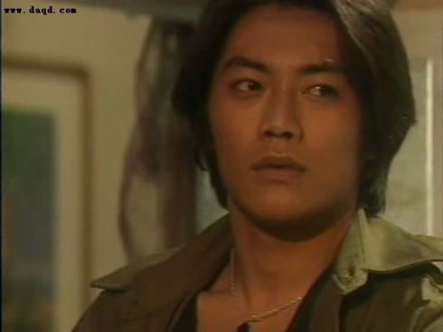

经典日剧拾遗[上]
幸福的可能：《处女之路》（又名《通向婚纱之路》）
主演：反町隆史
和久井映见 武田铁矢
宝生舞
对这部剧久久的怀念，不如说是忘不了剧中的反町。剧中的情节发展和人物设置都还是日剧的老套路，不同以往的是，送给了观众一个“零”缺点的男主角阿熏。
一个未婚怀孕、一无所有的倔强女人和美碰到了帅气、看似吊儿郎当的记者阿熏，在一连串突发事件的推动下，我们终于等来了男女主角心意的确认和最后那场热闹却不失笑果的婚礼，也终于在和美生下孩子后，听到了阿熏那句让人无限感怀的“我爱你”。
此外，老戏骨武田铁矢在剧中已升格成为女主角的父亲，但精湛的演技一如从前，诠释剧中和反町之间那亦父亦友的关系，很是出彩！
她回来了——《热力十七岁》
主演：内田有纪
武田真治 一色纱英等
相信看过此剧的观众，是绝对忘不了剧中短发的内田有纪带给我们的那种清爽、纯粹的感觉，反正在过了这麽久以后，让我有此感觉的日本女艺人也就有广沫凉子能与之相提。
这部剧顾名思义是属于青春的故事，94年在日本播出，而在96年我才在中文台看到，那时正值刚上初中，充满期待的年龄，所以这部《热力十七岁》带给我的影响是绝对可以想象到的。
剧中，因为日高巧美的回来，为我们展开了一系列属于青春的话题：友谊的考验、朦胧的情感、迷茫的未来等等，当然，里面那个不解风情、宛若男孩的巧美，也为我们诠释了怎样才是一个“热力十七岁”。
两个女人的战争——《美丽的真相》
主演：叶月里绪菜
菅野美穗 萩元圣人等
看过韩剧《夏娃诱惑》后，突然觉得是这部日剧《美丽的真相》的copy版。不同的是，《夏娃诱惑》里的人物设置和事件处理走的是典型的韩剧路线，但在结尾对“迎美”这个人物的处理上，与《美丽的真相》有着惊人的相似，都以“新生”而告终。
不同的是，该剧中的女主角所经历的事件比蔡琳的“甄善美”要跌宕起伏得多。日文的直译剧名是《恋爱的奇迹》，不过以内容来讲还是“美丽的真相”好些。
网络有真情——《With
Love》
主演：竹野内丰
田中美里 藤原纪香
及川光博
那时的日剧中较为新鲜的题材，不过情节在电影《电子情书》中有迹可寻。广告音乐人长古川天因为一封发错的邮件而与化名为晴天娃娃的银行女职员村上雨音结识，其实生活中，两人亦算是认识。就这样，一段交织在网络与现实中的爱情故事有此展开……
（ps：这部剧可算是帅哥竹野内丰展现魅力之作，也很喜欢带有知性美的女主角田中美里，亦觉得两人情侣搭配很不错~）
青春白皮书——《白线流》
主演：长濑智也
酒井美纪 柏原崇等
一部传统的青春校园剧，或许可算是“中学版”的爱情白皮书。青春期的迷惘、对友情的信赖与考验、爱情的不确定、残酷的社会现实……一切一切，属于青春的生活、情感和眼泪~